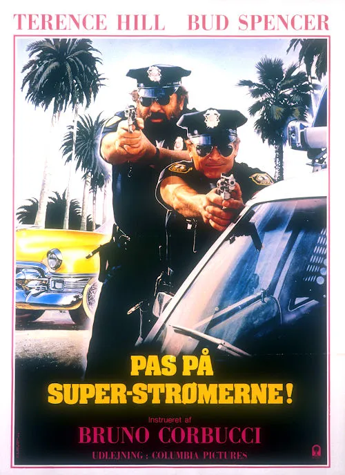

1985 · 2 tracce
Musiche di Carmelo e Michelangelo La Bionda.
Colonna sonora integrale non reperita: sono elencati i brani identificati nelle fonti e le pubblicazioni associate. Restano possibili inserti, riprese strumentali e musiche non pubblicate.
Gli elenchi documentano le edizioni pubblicate; la presenza di ciascuna traccia nel montaggio del film non è certificata.
Brani e ascolti
- 01
Miami Supercops (Instrumental) [Main Theme]
2:25Tema strumentale del film. La versione cantata Call the Police non è nel film e non viene contata qui.
- 02
Movies
La Bionda Presents · On Air; nella scena del ritrovamento di Joe Garrett. · Identificato nei risultati pubblici; apertura non verificata per un limite temporaneo di YouTube.
Fonti e riferimenti
- Scheda del film e creditiConsultata il 3 ottobre 2026.
- Scheda brano: Miami Supercops (Instrumental) [Main Theme]Consultata il 3 ottobre 2026.
- Scheda brano: MoviesConsultata il 3 ottobre 2026.
- Locandina — Miami Supercops – I poliziotti dell’8ª stradaConsultata il 3 ottobre 2026.